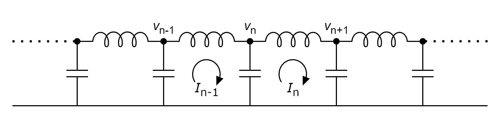

・非線形ポテンシャル(戸田ポテンシャル)からなる1次格子
・\(n\) 番目のばねの力 \(f_n(t)=-\phi'(r_n)\) を用いると、
\[\frac{d^2}{dt^2}\log(1+f_n)=f_{n+1}+f_{n-1}-2f_n\]
確認
\begin{alignat}{2}
&m\frac{d^2}{dt^2}y_{n}&=\;\;&\phi'(r_{n+1})&\;-\;\;&\phi'(r_n)&\;\;\;\cdots(1)\\
&m\frac{d^2}{dt^2}y_{n-1}&=\;\;&\phi'(r_{n})&\;-\;\;&\phi'(r_{n-1})&\;\;\;\cdots(2)\\
\end{alignat}
(1)式から(2)式を引いて、
\begin{align*}
m\frac{d^2}{dt^2}r_n
&=\phi'(r_{n+1})+\phi'(r_{n-1})-2\phi'(r_{n})\\
&=-(f_{n+1}+f_{n-1}-2f_n)
\end{align*}
ここで、
\[
r_n=-\frac{1}{b}\log\left[1+\frac{f_n}{a}\right]
\]
となるため、
\[
m\frac{d^2}{dt^2}\left(-\frac{1}{b}\log\left[1+\frac{f_n}{a}\right]\right)=-(f_{n+1}+f_{n-1}-2f_n)
\]
変形して、
\[
\frac{d^2}{dt^2}\left(\log\left[1+\frac{f_n}{a}\right]\right)=\frac{ab}{m}\left(\frac{f_{n+1}}{a}+\frac{f_{n-1}}{a}-2\frac{f_n}{a}\right)
\]
そして、
\[
\frac{f_n}{a}\rightarrow{f_n},\;\sqrt{\frac{ab}{m}}t\rightarrow{t}
\]
と変数変換すれば、
\[
\frac{d^2}{dt^2}\log(1+f_n)=f_{n+1}+f_{n-1}-2f_n
\]
となる。
ちなみに、
\begin{align*}
&a:\,[MLT^{-2}]\\
&b:\,[L^{-1}]
\end{align*}
なので、書き改めた \(f_n,\,t\) はともに無次元量となる。
確認
\(\displaystyle\phi(r)=\frac{a}{b}e^{-br}+ar-\frac{a}{b}\) なので、
\[
f_n=-\phi'(r_n)=ae^{-br_n}-a=a(e^{-br_n}-1)
\]
より、
\begin{gather*}
\frac{f_n}{a}=e^{-br_n}-1\\
1+\frac{f_n}{a}=e^{-br_n}\\
\log\left[1+\frac{f_n}{a}\right]=-br_n
\end{gather*}
\[
r_n=-\frac{1}{b}\log\left[1+\frac{f_n}{a}\right]
\]
・連続体近似でKdV方程式に帰着
証明
\[\frac{d^2}{dt^2}\log(1+f_n)=f_{n+1}+f_{n-1}-2f_n\;\;\;\cdots(\ast)\]
からKdV方程式を連続体近似で導く。
\((ソリトンの幅)\gg(格子間隔)\) の場合、離散変数 \(n\) を連続変数 \(x\) に変えてもよさそうである。
そして格子間隔を \(1\) とすれば \(f_n(t)=f(x,\,t)\) とすることができる。
\(\log(1+f_n)\) を \(1\) まわりでテイラー展開すると、 \[\log(1+f_n)=\log(1+f)=f-\frac{f^2}{2}+\frac{f^3}{3}-\cdots\] \(f_{n\pm1}=f(x\pm1,\,t)\) を \(x\) まわりでテイラー展開すると、 \[f_{n+1}=f+\frac{\partial{f}}{\partial{x}}+\frac{1}{2!}\frac{\partial^2f}{\partial{x}^2}+\frac{1}{3!}\frac{\partial^3f}{\partial{x}^3}+\frac{1}{4!}\frac{\partial^4f}{\partial{x}^4}+\cdots\] \[f_{n-1}=f-\frac{\partial{f}}{\partial{x}}+\frac{1}{2!}\frac{\partial^2f}{\partial{x}^2}-\frac{1}{3!}\frac{\partial^3f}{\partial{x}^3}+\frac{1}{4!}\frac{\partial^4f}{\partial{x}^4}-\cdots\] となるため、これらを\((\ast)\)に代入すると、 \begin{align*} \frac{\partial^2}{\partial t^2}\left(f-\frac{f^2}{2}+\frac{f^3}{3}-\cdots\right) &=\frac{2}{2!}\frac{\partial^2f}{\partial{x}^2}+\frac{2}{4!}\frac{\partial^4f}{\partial{x}^4}+\frac{2}{6!}\frac{\partial^6f}{\partial{x}^6}+\cdots\\ &=\frac{\partial^2f}{\partial{x}^2}+\frac{1}{12}\frac{\partial^4f}{\partial{x}^4}+\frac{1}{360}\frac{\partial^6f}{\partial{x}^6}+\cdots \end{align*} となる。そして\(f\) の摂動展開及び空間座標 \(\xi,\) 時間座標 \(\tau\) を、 \[ f=\varepsilon{f^{(1)}}+\varepsilon^2{f^{(2)}}+\varepsilon^3{f^{(3)}}+\cdots \] \[ \xi=\varepsilon^{\frac{1}{2}}(x-t),\;\tau=\varepsilon^{\frac{3}{2}}t \]
とすると、
\begin{align*}
\frac{\partial}{\partial{t}}&=-\varepsilon^{\frac{1}{2}}\frac{\partial}{\partial\xi}+\varepsilon^{\frac{3}{2}}\frac{\partial}{\partial\tau}\\
\frac{\partial}{\partial{x}}&=\varepsilon^{\frac{1}{2}}\frac{\partial}{\partial\xi}
\end{align*}
となる。これより、
\[
\frac{\partial^2}{\partial t^2}\left(f-\frac{f^2}{2}+\frac{f^3}{3}-\cdots\right)=\frac{\partial^2f}{\partial{x}^2}+\frac{1}{12}\frac{\partial^4f}{\partial{x}^4}+\frac{1}{360}\frac{\partial^6f}{\partial{x}^6}+\cdots
\]
の3次の項を考えると、( \(\varepsilon^2\) では意味のある式は得られない)
そして格子間隔を \(1\) とすれば \(f_n(t)=f(x,\,t)\) とすることができる。
\(\log(1+f_n)\) を \(1\) まわりでテイラー展開すると、 \[\log(1+f_n)=\log(1+f)=f-\frac{f^2}{2}+\frac{f^3}{3}-\cdots\] \(f_{n\pm1}=f(x\pm1,\,t)\) を \(x\) まわりでテイラー展開すると、 \[f_{n+1}=f+\frac{\partial{f}}{\partial{x}}+\frac{1}{2!}\frac{\partial^2f}{\partial{x}^2}+\frac{1}{3!}\frac{\partial^3f}{\partial{x}^3}+\frac{1}{4!}\frac{\partial^4f}{\partial{x}^4}+\cdots\] \[f_{n-1}=f-\frac{\partial{f}}{\partial{x}}+\frac{1}{2!}\frac{\partial^2f}{\partial{x}^2}-\frac{1}{3!}\frac{\partial^3f}{\partial{x}^3}+\frac{1}{4!}\frac{\partial^4f}{\partial{x}^4}-\cdots\] となるため、これらを\((\ast)\)に代入すると、 \begin{align*} \frac{\partial^2}{\partial t^2}\left(f-\frac{f^2}{2}+\frac{f^3}{3}-\cdots\right) &=\frac{2}{2!}\frac{\partial^2f}{\partial{x}^2}+\frac{2}{4!}\frac{\partial^4f}{\partial{x}^4}+\frac{2}{6!}\frac{\partial^6f}{\partial{x}^6}+\cdots\\ &=\frac{\partial^2f}{\partial{x}^2}+\frac{1}{12}\frac{\partial^4f}{\partial{x}^4}+\frac{1}{360}\frac{\partial^6f}{\partial{x}^6}+\cdots \end{align*} となる。そして\(f\) の摂動展開及び空間座標 \(\xi,\) 時間座標 \(\tau\) を、 \[ f=\varepsilon{f^{(1)}}+\varepsilon^2{f^{(2)}}+\varepsilon^3{f^{(3)}}+\cdots \] \[ \xi=\varepsilon^{\frac{1}{2}}(x-t),\;\tau=\varepsilon^{\frac{3}{2}}t \]
補足(Gardner-Morikawa変換)
線型格子(ポテンシャル \(\phi(r)=\frac{1}{2}\chi{r^2}\))では、
波長が大きいとき (波数 \(k\) が小さいとき)、適当に規格化すると、 \[ \omega=2\sin{\frac{k}{2}}\simeq 2\left(\frac{k}{2}-\frac{1}{6}\left(\frac{k}{2}\right)^3\right)=k-ck^3 \] となるから、波の位相は、 \[ kx-\omega{t}=kx-(k-ck^3)t=k(x-t)+ck^3t \] ここで、 \[ k=\varepsilon^{\frac{1}{2}} \] とすれば、(こう置くと後の展開式が少しきれいに) \[ \omega=\varepsilon^{\frac{1}{2}}(x-t)+c\varepsilon^{\frac{3}{2}}t \] ここから \[ \xi= \varepsilon^{\frac{1}{2}}(x-t),\;\tau= \varepsilon^{\frac{3}{2}}t \] の形が出てくる。
そしてこのように変数変換することで、\(k=\varepsilon^{\frac{1}{2}}\,(\ll1)\) を空間変数、時間変数に含めることができ、 小さなスケールでの関係式を導けるようになる。
また、導出したいKdV方程式
\[
(f_n)_t-3(f_n^2)_x+(f_n)_{xxx}=0
\]
は非線形項と分散項がつり合う、すなわち、
\[
\frac{\partial^2}{\partial{x}^2} \varpropto f_n
\]
となるが、これを
\[
\left(f_n^{(1)}\right)_\tau-3\left({f_n^{(1)}}^2\right)_{\xi}+\left(f_n^{(1)}\right)_{\xi\xi\xi}=0
\]
でも成り立たせるには、
\[
f_n^{(1)}\varpropto\frac{\partial^2}{\partial{\xi}^2}\varpropto\frac{1}{\varepsilon}\frac{\partial^2}{\partial{x}^2}\varpropto\frac{1}{\varepsilon}f_n
\]
すなわち、
\[
f_n^{(1)}\varpropto\frac{1}{\varepsilon}f_n
\]
となる必要があるため、
\[
f_n=\varepsilon f_n^{(1)}+\varepsilon^2f_n^{(2)}+\cdots
\]
という展開式を用いた。
ちなみにもし \(k=\varepsilon^{\frac{1}{2}}\) とせず \(k=\varepsilon\) としていたら、展開式は
\[
f_n=\varepsilon^2f_n^{(1)}+\varepsilon^4f_n^{(2)}+\cdots
\]
となっていた。
波長が大きいとき (波数 \(k\) が小さいとき)、適当に規格化すると、 \[ \omega=2\sin{\frac{k}{2}}\simeq 2\left(\frac{k}{2}-\frac{1}{6}\left(\frac{k}{2}\right)^3\right)=k-ck^3 \] となるから、波の位相は、 \[ kx-\omega{t}=kx-(k-ck^3)t=k(x-t)+ck^3t \] ここで、 \[ k=\varepsilon^{\frac{1}{2}} \] とすれば、(こう置くと後の展開式が少しきれいに) \[ \omega=\varepsilon^{\frac{1}{2}}(x-t)+c\varepsilon^{\frac{3}{2}}t \] ここから \[ \xi= \varepsilon^{\frac{1}{2}}(x-t),\;\tau= \varepsilon^{\frac{3}{2}}t \] の形が出てくる。
そしてこのように変数変換することで、\(k=\varepsilon^{\frac{1}{2}}\,(\ll1)\) を空間変数、時間変数に含めることができ、 小さなスケールでの関係式を導けるようになる。
確認
\(\xi=\varepsilon^{\frac{1}{2}}(x-t),\;\tau=\varepsilon^{\frac{3}{2}}t\) より、
\begin{align*}
\frac{\partial}{\partial{t}}
&=\frac{\partial}{\partial\xi}\frac{\partial{\xi}}{\partial{t}}+\frac{\partial}{\partial\tau}\frac{\partial{\tau}}{\partial{t}}\\
&=\frac{\partial}{\partial\xi}\left(-\varepsilon^{\frac{1}{2}}\right)+\frac{\partial}{\partial\tau}\left(\varepsilon^{\frac{3}{2}}\right)\\
&=-\varepsilon^{\frac{1}{2}}\frac{\partial}{\partial\xi}+\varepsilon^{\frac{3}{2}}\frac{\partial}{\partial\tau}\\
\frac{\partial}{\partial{x}}
&=\frac{\partial}{\partial\xi}\frac{\partial{\xi}}{\partial{x}}\\
&=\frac{\partial}{\partial\xi}\left(\varepsilon^{\frac{1}{2}}\right)\\
&=\varepsilon^{\frac{1}{2}}\frac{\partial}{\partial\xi}
\end{align*}
\begin{align*}
&(左辺)\\
&=-\varepsilon^{\frac{1}{2}}\frac{\partial}{\partial\xi}\left(\varepsilon^{\frac{3}{2}}\frac{\partial}{\partial\tau}\varepsilon f^{(1)}\right)
+\varepsilon^{\frac{3}{2}}\frac{\partial}{\partial\tau}\left(-\varepsilon^{\frac{1}{2}}\frac{\partial}{\partial\xi}\varepsilon f^{(1)}\right)
-\varepsilon^{\frac{1}{2}}\frac{\partial}{\partial\xi}\left\{-\varepsilon^{\frac{1}{2}}\frac{\partial}{\partial\xi}\left(-\frac{(\varepsilon f^{(1)})^2}{2}\right)\right\}\\
&=\varepsilon^3\left(-2\frac{\partial^2f^{(1)}}{\partial\tau\partial\xi}-\frac{1}{2}\frac{\partial^2}{\partial\xi^2}(f^{(1)})^2\right)\\
&(右辺)\\
&=\frac{1}{12}\left(\varepsilon^{\frac{1}{2}}\frac{\partial}{\partial\xi}\right)^4\varepsilon f^{(1)}\\
&=\varepsilon^3\cdot\frac{1}{12}\frac{\partial^4f^{(1)}}{\partial\xi^4}
\end{align*}
より、
\[
-2\frac{\partial^2f^{(1)}}{\partial\tau\partial\xi}-\frac{1}{2}\frac{\partial^2}{\partial\xi^2}(f^{(1)})^2=\frac{1}{12}\frac{\partial^4f^{(1)}}{\partial\xi^4}
\]
両辺 \(\xi\) で積分すると、
\[
-2\frac{\partial f^{(1)}}{\partial\tau}-f^{(1)}\frac{\partial}{\partial\xi}f^{(1)}=\frac{1}{12}\frac{\partial^3f^{(1)}}{\partial\xi^3}
\]
整理して、
\[
\frac{\partial f^{(1)}}{\partial\tau}+\frac{1}{2}f^{(1)}\frac{\partial}{\partial\xi}f^{(1)}+\frac{1}{24}\frac{\partial^3f^{(1)}}{\partial\xi^3}=0
\]
\(t=\tau,\;x=2\sqrt[3]{3}\xi,\;u(x,\,t)=\frac{6}{\sqrt[3]{3}}f^{(1)}(\xi,\,\tau)\) とすれば、
\[
\frac{\partial u(x,\,t)}{\partial t}+6u(x,\,t)\frac{\partial u(x,\,t)}{\partial{x}}+\frac{\partial^3 u(x,\,t)}{\partial{x}^3}=0
\]
・梯子型非線形LC回路の電流電圧方程式と同等

確認
コイル(インダクタ)のインダクタンス: \(L\) とすると、
\[
L\frac{dI_n}{dt}=v_n-v_{n+1}
\]
が成り立つ。添え字をずらして、
\[
L\frac{dI_{n-1}}{dt}=v_{n-1}-v_{n}
\]
から、
\[
L\frac{d}{dt}(I_{n-1}-I_n)=v_{n+1}+v_{n-1}-2v_n
\]
を得る。
またキャパシタに流れる電流は、そのキャパシタにたまる電荷 \(q_n\) を用いて、 \[ \frac{dq_n}{dt}=I_{n-1}-I_n \] となるから、 \[ L\frac{d^2q_n}{dt^2}=v_{n+1}+v_{n-1}-2v_n \] となる。
ここで \(q\) と \(v\) の関係、すなわちキャパシタを考える。非線形キャパシタとすると、 \[ C(V)=\frac{Q(V_0)}{F(V_0)+V-V_0} \] \begin{align*} C&:\,キャパシタの容量\\ V_0&:\,キャパシタに加えた直流電圧(直流バイアス電圧)\\ Q(V_0),\;F(V_0)&:\;非線形キャパシタの特性によって決まる量 \end{align*} となる。一般にキャパシタに加えられる電圧 \(v_n\) と蓄えられる電荷 \(q_n\) を用いて \[ q_n=\int_0^{v_n}C(V)\,dV \] となるため、\(v_n:=V_0+V_n\) とし、電圧の交流成分 \(V_n\) を定義すると、 \begin{align*} q_n &=\int_{0}^{V_0+V_n}\frac{Q(V_0)}{F(V_0)+V-V_0}dV\\ &=\int_{0}^{V_0}\frac{Q(V_0)}{F(V_0)+V-V_0}dV+\int_{V_0}^{V_0+V_n}\frac{Q(V_0)}{F(V_0)+V-V_0}dV \end{align*} 第1項は時間に依存せず \(\frac{d^2}{dt^2}\) で消えるため考えない。第2項は、 \begin{align*} &\int_{V_0}^{V_0+V_n}\frac{Q(V_0)}{F(V_0)+V-V_0}dV\\ &=Q(V_0)\Bigl[\log\bigl(F(V_0)+V-V_0\bigr)\Bigr]_{V_0}^{V_0+V_n}\\ &=Q(V_0)\log\left[\frac{F(V_0)+V_n}{F(V_0)}\right]\\ &=Q(V_0)\log\left[1+\frac{V_n}{F(V_0)}\right] \end{align*} となるため、 \[ L\frac{d^2q_n}{dt^2}=v_{n+1}+v_{n-1}-2v_n \] は、 \[ \frac{d^2}{dt^2}\left(\log\left[1+\frac{V_n}{F(V_0)}\right]\right)=\frac{1}{LQ(V_0)}(V_{n+1}+V_{n-1}-2V_n) \] となる。これは無次元化する前の戸田格子の運動方程式 \[ \frac{d^2}{dt^2}\left(\log\left[1+\frac{f_n}{a}\right]\right)=\frac{b}{m}\left(f_{n+1}+f_{n-1}-2f_n\right) \] と同じ形になる。
またキャパシタに流れる電流は、そのキャパシタにたまる電荷 \(q_n\) を用いて、 \[ \frac{dq_n}{dt}=I_{n-1}-I_n \] となるから、 \[ L\frac{d^2q_n}{dt^2}=v_{n+1}+v_{n-1}-2v_n \] となる。
ここで \(q\) と \(v\) の関係、すなわちキャパシタを考える。非線形キャパシタとすると、 \[ C(V)=\frac{Q(V_0)}{F(V_0)+V-V_0} \] \begin{align*} C&:\,キャパシタの容量\\ V_0&:\,キャパシタに加えた直流電圧(直流バイアス電圧)\\ Q(V_0),\;F(V_0)&:\;非線形キャパシタの特性によって決まる量 \end{align*} となる。一般にキャパシタに加えられる電圧 \(v_n\) と蓄えられる電荷 \(q_n\) を用いて \[ q_n=\int_0^{v_n}C(V)\,dV \] となるため、\(v_n:=V_0+V_n\) とし、電圧の交流成分 \(V_n\) を定義すると、 \begin{align*} q_n &=\int_{0}^{V_0+V_n}\frac{Q(V_0)}{F(V_0)+V-V_0}dV\\ &=\int_{0}^{V_0}\frac{Q(V_0)}{F(V_0)+V-V_0}dV+\int_{V_0}^{V_0+V_n}\frac{Q(V_0)}{F(V_0)+V-V_0}dV \end{align*} 第1項は時間に依存せず \(\frac{d^2}{dt^2}\) で消えるため考えない。第2項は、 \begin{align*} &\int_{V_0}^{V_0+V_n}\frac{Q(V_0)}{F(V_0)+V-V_0}dV\\ &=Q(V_0)\Bigl[\log\bigl(F(V_0)+V-V_0\bigr)\Bigr]_{V_0}^{V_0+V_n}\\ &=Q(V_0)\log\left[\frac{F(V_0)+V_n}{F(V_0)}\right]\\ &=Q(V_0)\log\left[1+\frac{V_n}{F(V_0)}\right] \end{align*} となるため、 \[ L\frac{d^2q_n}{dt^2}=v_{n+1}+v_{n-1}-2v_n \] は、 \[ \frac{d^2}{dt^2}\left(\log\left[1+\frac{V_n}{F(V_0)}\right]\right)=\frac{1}{LQ(V_0)}(V_{n+1}+V_{n-1}-2V_n) \] となる。これは無次元化する前の戸田格子の運動方程式 \[ \frac{d^2}{dt^2}\left(\log\left[1+\frac{f_n}{a}\right]\right)=\frac{b}{m}\left(f_{n+1}+f_{n-1}-2f_n\right) \] と同じ形になる。
・1-ソリトン解
\begin{gather*}
f_n(t)=\frac{d^2}{dt^2}\log\tau_n(t)\\
\tau_n(t)=1+e^{2\eta_n}
\end{gather*}
\[\left\{\begin{aligned}
\eta_n&=kn-\omega t+\theta\\
\omega\,&=\pm{\sinh{k}}
\end{aligned}\right.\]
導出
KdV方程式同様、
\[
f_n=\frac{d^2}{dt^2}\log\tau_n
\]
とおくと、(方程式の形から定数倍は無し)
\begin{align*}
\frac{d^2}{dt^2}\log\left(1+\frac{d^2}{dt^2}\log\tau_n\right)
&=\frac{d^2}{dt^2}\log\tau_{n+1}+\frac{d^2}{dt^2}\log\tau_{n^2}-2\frac{d^2}{dt^2}\log\tau_n\\
&=\frac{d^2}{dt^2}\log\left(\frac{\tau_{n+1}\tau_{n-1}}{\tau_n^2}\right)
\end{align*}
\[
\frac{d^2}{dt^2}\log\tau_n=\frac{\tau_n''\tau_n-\tau_n'^2}{\tau_n^2}
\]
より、
\[
1+\frac{\tau_n''\tau_n-\tau_n'^2}{\tau_n^2}=\frac{\tau_{n+1}\tau_{n-1}}{\tau_n^2}
\]
整理すると、
\[
\tau_n''\tau_n-\tau_n'^2=\tau_{n+1}\tau_{n-1}-\tau_n^2
\]
広田のD-operatorを用いると、(\(\displaystyle e^{\delta D_x}f(x)\cdot g(x):=f(x+\delta)g(x-\delta)\))
\[
\frac{1}{2}D_t^2\,\tau_n\cdot\tau_n=(e^{D_n}-1)\,\tau_n\cdot\tau_n\;\;\cdots(\ast)
\]
と双線型形式で表せる。
摂動法を用いる。\(\tau_n=1\) は \((\ast)\) を満たすため、
\[
\tau_n=1+\varepsilon\tau_n^{(1)}+\varepsilon^2\tau_n^{(2)}+\varepsilon^3\tau_n^{(3)}+\cdots\;\;\;(n\in\mathbb{Z})
\]
とし、\(\varepsilon\) の次数ごとに考える。
\begin{alignat}{2}
\varepsilon\;&:\;\bigl(\frac{1}{2}D_t^2-(e^{D_n}-1)\bigr)\,\bigl(\tau_n^{(1)}\cdot1+1\cdot\tau_n^{(1)}\bigr)=0&\;\;\;\cdots(\ast_1)\\
\varepsilon^2&:\;\bigl(\frac{1}{2}D_t^2-(e^{D_n}-1)\bigr)\,\bigl(\tau_n^{(2)}\cdot1+\tau_n^{(1)}\cdot\tau_n^{(1)}+1\cdot\tau_n^{(2)}\bigr)=0&\;\;\;\cdots(\ast_2)\\
\varepsilon^2&:\;\bigl(\frac{1}{2}D_t^2-(e^{D_n}-1)\bigr)\,\bigl(\tau_n^{(3)}\cdot1+\tau_n^{(2)}\cdot\tau_n^{(1)}+\tau_n^{(1)}\cdot\tau_n^{(2)}+1\cdot\tau_n^{(3)}\bigr)=0&\;\;\;\cdots(\ast_3)\\
\vdots
\end{alignat}
よって、
\[
\tau_n=1+e^{kn-\omega{t}+\theta},\;\omega=\pm\sinh{k}
\]
\((\ast_1)\) を満たす \(\tau_n^{(1)}\) を考える。
\begin{align*}
\frac{1}{2}D_t^2\,\bigl(\tau_n^{(1)}\cdot1+1\cdot\tau_n^{(1)}\bigr)
&=\partial_t^2\tau_n^{(1)}\\
e^{D_n}\bigl(\tau_n^{(1)}\cdot1+1\cdot\tau_n^{(1)}\bigr)
&=\tau_{n+1}^{(1)}+\tau_{n-1}^{(1)}\\
1\;\;\bigl(\tau_n^{(1)}\cdot1+1\cdot\tau_n^{(1)}\bigr)
&=2\tau_n^{(1)}\\
\end{align*}
より、
\[
\partial_t^2\tau_n^{(1)}-(\tau_{n+1}^{(1)}+\tau_{n-1}^{(1)}-2\tau_n^{(1)})=0
\]
ここでKdV方程式同様、
\[
\tau_n^{(1)}=e^{2(kn-\omega{t}+\theta)}
\]
とすると、(2倍すると後々うれしい)
\[
\left(4\omega^2-(e^{2k}+e^{-2k}-2)\right)e^{2(kn-\omega{t}+\theta)}=0
\]
分散関係を求めると、
\begin{align*}
4\omega^2&-(e^{2k}+e^{-2k}-2)=0\\
\omega^2&=\frac{e^{2k}-2+e^{-2k}}{4}\\
&=\frac{e^{2k}-2e^{k}e^{-k}+e^{-2k}}{4}\\
&=\left(\frac{e^k-e^{-k}}{2}\right)^2\;\;\leftarrow うれしい㌽\\
&=\sinh^2{k}
\end{align*}
となるため、
\[
\tau_n^{(1)}=e^{2(kn-\omega{t}+\theta)},\;\omega=\pm\sinh{k}
\]
は \((\ast_1)\) を満たすため、これを \(\tau_n^{(1)}\) とする。
\((\ast_2)\) を満たす \(\tau_n^{(2)}\) を考える。
\begin{align*}
\frac{1}{2}D_t^2\,\bigl(\tau_n^{(2)}\cdot1+\tau_n^{(1)}\cdot\tau_n^{(1)}+1\cdot\tau_n^{(2)}\bigr)
&=\partial_t^2\tau_n^{(2)}\\
e^{D_n}\bigl(\tau_n^{(2)}\cdot1+\tau_n^{(1)}\cdot\tau_n^{(1)}+1\cdot\tau_n^{(2)}\bigr)
&=\tau_{n+1}^{(2)}+\tau_{n+1}^{(1)}\tau_{n-1}^{(1)}+\tau_{n-1}^{(2)}\\
&=\tau_{n+1}^{(2)}+\tau_n^{(1)}e^{2k}\tau_n^{(1)}e^{-2k}+\tau_{n-1}^{(2)}\\
&=\tau_{n+1}^{(2)}+{\tau_n^{(1)}}^2+\tau_{n-1}^{(2)}\\
1\;\;\bigl(\tau_n^{(2)}\cdot1+\tau_n^{(1)}\cdot\tau_n^{(1)}+1\cdot\tau_n^{(2)}\bigr)
&=2\tau_n^{(2)}+{\tau_n^{(1)}}^2\\
\end{align*}
より、
\begin{align*}
0
&=\partial_t^2\tau_n^{(2)}-\bigl((\tau_{n+1}^{(2)}+{\tau_n^{(1)}}^2+\tau_{n-1}^{(2)})-(2\tau_n^{(2)}+{\tau_n^{(1)}}^2)\bigr)\\
&=\partial_t^2\tau_n^{(2)}-(\tau_{n+1}^{(2)}+\tau_{n-1}^{(2)}-2\tau_n^{(2)})
\end{align*}
となるため、
\[
\tau_n^{(2)}=0
\]
は \((\ast_2)\) を満たすため、これを \(\tau_n^{(2)}\) とする。
\((\ast_m)\;(m\geq{3})\) を満たす \(\tau_n^{(m)}\) を考える。
\(\tau_n^{(1)}=\tau_n^{(2)}=\cdots=\tau_n^{(m-1)}=0\) とすると、\((\ast_m)\) は、
\[
\partial_t^2\tau_n^{(m)}-(\tau_{n+1}^{(m)}+\tau_{n-1}^{(m)}-2\tau_n^{(m)})=0
\]
となり、
\[
\tau_n^{(m)}=0
\]
とできるため、任意の \(m\geq{3}\) に対して、\(\tau_n^{(m)}=0\) となる。
・2-ソリトン解
\begin{gather*}
f_n(t)=\frac{d^2}{dt^2}\log\tau_n(t)\\
\tau_n(t)=1+e^{2{\eta_1}_n}+e^{2{\eta_2}_n}+e^{2{\eta_1}_n+2{\eta_2}_n+A_{12}}
\end{gather*}
\[\left\{\begin{aligned}
{\eta_i}_n&=k_in-\omega_it+\theta_i\\
\omega_i\,&=\pm{\sinh{k_i}}\\
e^{A_{12}}&=\frac{\sinh^2(k_1-k_2)-(\omega_1-\omega_2)^2}{(\omega_1+\omega_2)^2-\sinh^2(k_1+k_2)}
\end{aligned}\right.\]
・2-ソリトン解のシミュレーション
-追い越し衝突-
-正面衝突-
・Lax形式
戸田格子の運動方程式(無次元)は、\(P_n:=\dot{y}_n,\;F_n:=e^{-(y_{n+1}-y_n)}\) とすると、
\[\left\{
\begin{aligned}
\frac{d}{dt}P_n&=F_{n-1}-F_n\\
\frac{d}{dt}F_n&=(P_n-P_{n+1})F_n
\end{aligned}
\right.\]
と変形できる。また \(\displaystyle a_n:=\frac{1}{2}\sqrt{F_n},\;b_n:=\frac{1}{2}P_n\) とすると、
\[\left\{
\begin{aligned}
\frac{d}{dt}a_n&=a_n(b_n-b_{n+1})\\
\frac{d}{dt}b_n&=2(a_{n-1}^2-a_n^2)
\end{aligned}
\right.\]
であり、
\begin{align*}
L(t)&:=
\begin{pmatrix}
b_1&a_1&0&&&&\huge{O}\\
a_1&b_2&a_2&\ddots&&&\\
0 &a_2&b_3&\ddots&\ddots&&\\
&\ddots&\ddots&\ddots&\ddots&\ddots&\\
&&\ddots&\ddots&b_{N-2}&a_{N-2}&0\\
&&&\ddots&a_{N-2}&b_{N-1}&a_{N-1}\\
\huge{O}&&&&0&a_{N-1}&b_N\\
\end{pmatrix}\\
M(t)&:=
\begin{pmatrix}
0&-a_1&0&&&&\huge{O}\\
a_1&0&-a_2&\ddots&&&\\
0 &a_2&0&\ddots&\ddots&&\\
&\ddots&\ddots&\ddots&\ddots&\ddots&\\
&&\ddots&\ddots&0&-a_{N-2}&0\\
&&&\ddots&a_{N-2}&0&-a_{N-1}\\
\huge{O}&&&&0&a_{N-1}&0\\
\end{pmatrix}
\end{align*}
とすると、
\[
L_t=[M,\,L]
\]
を満たす。
ちなみに周期境界条件を課したいときは、
\begin{align*}
L(t)&:=
\begin{pmatrix}
b_1&a_1&0&&&&a_N\\
a_1&b_2&a_2&\ddots&&&\\
0 &a_2&b_3&\ddots&\ddots&&\\
&\ddots&\ddots&\ddots&\ddots&\ddots&\\
&&\ddots&\ddots&b_{N-2}&a_{N-2}&0\\
&&&\ddots&a_{N-2}&b_{N-1}&a_{N-1}\\
a_N&&&&0&a_{N-1}&b_N\\
\end{pmatrix}\\
M(t)&:=
\begin{pmatrix}
0&-a_1&0&&&&a_N\\
a_1&0&-a_2&\ddots&&&\\
0 &a_2&0&\ddots&\ddots&&\\
&\ddots&\ddots&\ddots&\ddots&\ddots&\\
&&\ddots&\ddots&0&-a_{N-2}&0\\
&&&\ddots&a_{N-2}&0&-a_{N-1}\\
-a_N&&&&0&a_{N-1}&0\\
\end{pmatrix}
\end{align*}
とすれば、
確認
\(r_n=y_n-y_{n-1}\) なので、
\begin{align*}
m\frac{d^2}{dt^2}y_n
&=\phi'(r_{n+1})-\phi'(r_{n})\\
&=-a\left(e^{-br_{n+1}}-e^{-br_{n}}\right)\\
&=a\left(e^{-b(y_{n}-y_{n-1})}-e^{-b(y_{n+1}-y_n)}\right)
\end{align*}
となる。
\[
b y_n\rightarrow y_n,\;\;\sqrt{\frac{ab}{m}}t\rightarrow{t}
\]
と変数変換し無次元化すると、
\[
\frac{d^2}{dt^2}y_n=e^{-(y_{n}-y_{n-1})}-e^{-(y_{n+1}-y_n)}
\]
となる。
\(\displaystyle P_n:=\frac{d}{dt}y_n\) とすると、 \[\left\{ \begin{aligned} P_n&=\frac{d}{dt}y_n\\ \frac{d}{dt}P_n&=e^{-(y_{n}-y_{n-1})}-e^{-(y_{n+1}-y_n)} \end{aligned} \right.\] \(\displaystyle F_n:=e^{-(y_{n+1}-y_n)}\) とすれば、 \begin{align*} \frac{d}{dt}F_n &=-\frac{d}{dt}(y_{n+1}-y_n)e^{-(y_{n+1}-y_n)}\\ &=-\frac{d}{dt}(y_{n+1}-y_n)F_n\\ &=(P_n-P_{n+1})F_n \end{align*} より、 \[\left\{ \begin{aligned} \frac{d}{dt}P_n&=F_{n-1}-F_n\\ \frac{d}{dt}F_n&=(P_n-P_{n+1})F_n \end{aligned} \right.\]
\(\displaystyle P_n:=\frac{d}{dt}y_n\) とすると、 \[\left\{ \begin{aligned} P_n&=\frac{d}{dt}y_n\\ \frac{d}{dt}P_n&=e^{-(y_{n}-y_{n-1})}-e^{-(y_{n+1}-y_n)} \end{aligned} \right.\] \(\displaystyle F_n:=e^{-(y_{n+1}-y_n)}\) とすれば、 \begin{align*} \frac{d}{dt}F_n &=-\frac{d}{dt}(y_{n+1}-y_n)e^{-(y_{n+1}-y_n)}\\ &=-\frac{d}{dt}(y_{n+1}-y_n)F_n\\ &=(P_n-P_{n+1})F_n \end{align*} より、 \[\left\{ \begin{aligned} \frac{d}{dt}P_n&=F_{n-1}-F_n\\ \frac{d}{dt}F_n&=(P_n-P_{n+1})F_n \end{aligned} \right.\]
確認
\begin{align*}
ML
&=
\begin{pmatrix}
-a_1^2&-a_1b_2&-a_1a_2&&&&\huge{O}\\
a_1b_1&a_1^2-a_2^2&-a_2b_3&-a_2a_3&&&\\
a_1a_2&a_2b_2&a_2^2-a_3^2&\ddots&\ddots&&\\
&a_2a_3&\ddots&\ddots&\ddots&-a_{N-3}a_{N-2}&\\
&&\ddots&\ddots&a_{N-3}^2-a_{N-2}^2&-a_{N-2}b_{N-1}&-a_{N-2}a_{N-1}\\
&&&a_{N-3}a_{N-2}&a_{N-2}b_{N-2}&a_{N-2}^2-a_{N-1}^2&-a_{N-1}b_N\\
\huge{O}&&&&a_{N-2}a_{N-1}&a_{N-1}b_{N-1}&a_{N-1}^2
\end{pmatrix}\\
LM
&=
\begin{pmatrix}
a_1^2&-a_1b_1&-a_1a_2&&&&\huge{O}\\
a_1b_2&a_2^2-a_1^2&-a_2b_2&-a_2a_3&&&\\
a_1a_2&a_2b_3&a_3^2-a_2^2&\ddots&\ddots&&\\
&a_2a_3&\ddots&\ddots&\ddots&-a_{N-3}a_{N-2}&\\
&&\ddots&\ddots&a_{N-2}^2-a_{N-3}^2&-a_{N-2}b_{N-2}&-a_{N-2}a_{N-1}\\
&&&a_{N-3}a_{N-2}&a_{N-2}b_{N-1}&a_{N-1}^2-a_{N-2}^2&-a_{N-1}b_{N-1}\\
\huge{O}&&&&a_{N-2}a_{N-1}&a_{N-1}b_{N}&-a_{N-1}^2
\end{pmatrix}
\end{align*}
より、
\begin{align*}
[M,\,L]
&=
\begin{pmatrix}
-2a_1^2&a_1(b_1-b_2)&0&&&&\huge{O}\\
a_1(b_1-b_2)&2(a_1^2-a_2^2)&a_2(b_2-b_3)&\ddots&&\\
0&a_2(b_2-b_3)&2(a_2^2-a_3^2)&\ddots&\ddots&\\
&\ddots&\ddots&\ddots&\ddots&\ddots&\\
&&\ddots&\ddots&2(a_{N-3}^2-a_{N-2}^2)&a_{N-3}(b_{N-3}-b_{N-2})&0\\
&&&\ddots&a_{N-3}(b_{N-3}-b_{N-2})&2(a_{N-2}^2-a_{N-1}^2)&a_{N-2}(b_{N-2}-b_{N-1})\\
\huge{O}&&&&0&a_{N-2}(b_{N-2}-b_{N-1})&2a_{N-1}^2
\end{pmatrix}
\end{align*}
となる。格子の両端が固定されている場合、
\[
a_0=a_N=0
\]
と境界条件を定めると、対角成分は、
\[
2(a_{n-1}^2-a_{n}^2)=\frac{d}{dt}b_n
\]
その上下の成分は、
\[
a_{n}(b_n-b_{n+1})=\frac{d}{dt}a_n
\]
となり、
\[
L_t=[M,\,L]
\]
が確認できる。
\begin{align*}
ML
&=
\begin{pmatrix}
a_N^2-a_1^2&-a_1b_2&-a_1a_2&&&a_{N-1}a_N&a_Nb_N\\
a_1b_1&a_1^2-a_2^2&-a_2b_3&-a_2a_3&&&\\
a_1a_2&a_2b_2&a_2^2-a_3^2&\ddots&\ddots&&\\
&a_2a_3&\ddots&\ddots&\ddots&-a_{N-3}a_{N-2}&\\
&&\ddots&\ddots&a_{N-3}^2-a_{N-2}^2&-a_{N-2}b_{N-1}&-a_{N-2}a_{N-1}\\
&&&a_{N-3}a_{N-2}&a_{N-2}b_{N-2}&a_{N-2}^2-a_{N-1}^2&-a_{N-1}b_N\\
-a_Nb_1&-a_1a_N&&&a_{N-2}a_{N-1}&a_{N-1}b_{N-1}&a_{N-1}^2-a_{N}^2
\end{pmatrix}\\
LM
&=
\begin{pmatrix}
a_1^2-a_{N}^2&-a_1b_1&-a_1a_2&&&a_{N-1}a_N&a_Nb_1\\
a_1b_2&a_2^2-a_1^2&-a_2b_2&-a_2a_3&&&\\
a_1a_2&a_2b_3&a_3^2-a_2^2&\ddots&\ddots&&\\
&a_2a_3&\ddots&\ddots&\ddots&-a_{N-3}a_{N-2}&\\
&&\ddots&\ddots&a_{N-2}^2-a_{N-3}^2&-a_{N-2}b_{N-2}&-a_{N-2}a_{N-1}\\
&&&a_{N-3}a_{N-2}&a_{N-2}b_{N-1}&a_{N-1}^2-a_{N-2}^2&-a_{N-1}b_{N-1}\\
-a_Nb_N&-a_1a_N&&&a_{N-2}a_{N-1}&a_{N-1}b_{N}&a_N^2-a_{N-1}^2
\end{pmatrix}
\end{align*}
より、
\begin{align*}
[M,\,L]
&=
\begin{pmatrix}
2(a_N-a_1^2)&a_1(b_1-b_2)&0&&&&a_N(b_N-b_1)\\
a_1(b_1-b_2)&2(a_1^2-a_2^2)&a_2(b_2-b_3)&\ddots&&\\
0&a_2(b_2-b_3)&2(a_2^2-a_3^2)&\ddots&\ddots&\\
&\ddots&\ddots&\ddots&\ddots&\ddots&\\
&&\ddots&\ddots&2(a_{N-3}^2-a_{N-2}^2)&a_{N-3}(b_{N-3}-b_{N-2})&0\\
&&&\ddots&a_{N-3}(b_{N-3}-b_{N-2})&2(a_{N-2}^2-a_{N-1}^2)&a_{N-2}(b_{N-2}-b_{N-1})\\
a_N(b_N-b_1)&&&&0&a_{N-2}(b_{N-2}-b_{N-1})&2(a_{N-1}^2-a_{N}^2)
\end{pmatrix}
\end{align*}
となり、
\[
a_N=a_0,\;b_N=b_0
\]
の条件下で、
\[
L_t=[M,\,L]
\]
が確認できる。
・保存量
\(m\in\mathbb{N}_0\) に対して、
\[
\mathrm{Tr}\,L^m
\]
は保存量となる。
証明＆補足
\(L(t)\) は実対称行列なので対角化可能である。なので、
\[
Q^{-1}LQ=\mathrm{diag}(\lambda_1,\ldots,\,\lambda_N)=:A(t)
\]
となる実正則行列 \(Q\) 及び固有値 \(\lambda_1,\ldots,\,\lambda_N\) が存在する。これより、
\[
\mathrm{Tr}\,L=\mathrm{Tr}(LQ^{-1}Q)=\mathrm{Tr}(Q^{-1}LQ)=\mathrm{Tr}\,A=\sum_{i=1}^{N}A_{ii}
\]
及び
\[
\mathrm{Tr}\,L_t=\mathrm{Tr}\,A_t
\]
となるため、
\begin{align*}
\frac{d}{dt}\mathrm{Tr}\,L^m
&=\frac{d}{dt}\sum_{i=1}^{N}A_{ii}^m(t)\\
&=\sum_{i=1}^{N}mA_{ii}^{m-1}(t)\frac{d}{dt}A_{ii}(t)\\
&=m\sum_{i=1}^{N}A_{ii}^{m-1}(t)\frac{d}{dt}A_{ii}(t)\\
&=m\,\mathrm{Tr}\bigl(A^{m-1}A_t\bigr)\\
&=m\,\mathrm{Tr}\bigl(A^{m-1}L_t\bigr)\\
&=m\,\mathrm{Tr}\bigl(A^{m-1}[M,\,L]\bigr)\\
&=0
\end{align*}
となり示せた。
また固有値 \(\lambda_1,\ldots,\,\lambda_N\) を用いて、
\[
\mathrm{Tr}\,L^m=\sum_{i=1}^{N}\lambda_i^m
\]
も保存量であり、固有値を用いた任意の対称多項式は時間依存しないことがわかる。
例えば、 \[ F(\lambda):=\det(\lambda{E}+L) \] とすると、\(\lambda=-\lambda_i\;\;(1\leqq{i}\leqq{N})\) のとき、 \[ \det(L-\lambda_i{E})=0\;\;( \because 固有値方程式) \] となるため、 \[ F(\lambda)=\prod_{i=1}^{N}(\lambda+\lambda_i) \] となり、対称多項式となる。つまり \(\lambda\) の値に関わらず \[ \frac{d}{dt}F(\lambda)=0 \] を満たす。すなわち \[ F(\lambda)=\sum_{k=0}^{N}c_k\lambda^{k},\;\;\frac{d}{dt}c_k=0 \] となり、\(c_k\;\;(1\leqq{k}\leqq{N})\) も保存量となる。
例えば、 \[ F(\lambda):=\det(\lambda{E}+L) \] とすると、\(\lambda=-\lambda_i\;\;(1\leqq{i}\leqq{N})\) のとき、 \[ \det(L-\lambda_i{E})=0\;\;( \because 固有値方程式) \] となるため、 \[ F(\lambda)=\prod_{i=1}^{N}(\lambda+\lambda_i) \] となり、対称多項式となる。つまり \(\lambda\) の値に関わらず \[ \frac{d}{dt}F(\lambda)=0 \] を満たす。すなわち \[ F(\lambda)=\sum_{k=0}^{N}c_k\lambda^{k},\;\;\frac{d}{dt}c_k=0 \] となり、\(c_k\;\;(1\leqq{k}\leqq{N})\) も保存量となる。